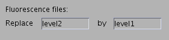

All features of the tool may be accessed by the user-interface elements of the main window.
Segmentation and extraction of cell-based quantitative information
in a batch of transmission/fluorescence is described in the
following.
A suitable transmission/fluorescence image pair typically looks as follows:
|
|
|
|
transmission image (sample-level2.png) |
fluorescence image (sample-level1.png) |
The following steps illustrate the general segmentation procedure:
Specification of the source transmission images.
Locate the „Transmission files“ section and add image files
with the „+“ button.
Files in the list can be selected by the mouse, multiple selections are possible by pressing the „Ctrl“ or „Shift“ button.
Files in the list are processed in the order they appear.The buttons „/\“ and „\/“ allow to change the order of the selected files.
Selected files may be removed from the list by the „-“ button.
Specification of a filename replacement rule for fluorescence image files.

The fluorescence images have to be located in the same
directory under the name of the source image transformed by
this rule. E.g,. the above example yields sample-level2.png ->
sample-level1.png.
Configuration of the segmentation parameters.
The configuration dialog can be invoked by pressing the
button „Configure...“ in the section „Counting“.
There are default values which can be accessed by the button „Default“.
„Preprocess images“ switches the image smoothing and background detection steps.
„Crop image“ allows to crop the left, right, top and bottom margin of each input image according to the specified values in pixels.
„Scale image“ allows to scale each input image to the specified size in pixels.
„Median filter length“ is given in pixels. It should be greater than the size of relevant features and smaller than size of irrelevant background features.
„Nonlinear elliptic smoothing“ and „Edge weight“ allow for edge-preserving removal of noise from the input image. The first parameter adjusts the amount of smoothing where lower values lead to smoother images. The second parameter corresponds to how much contrast change is considered as an edge with higher values leading to less edges.
„Background threshold“ specifies below which jump height the pixel may be considered as background.
„Background feature size“ corresponds to the minimal amount of connected pixels which will be considered as background.
„Segment cells“ switches the cell detection steps.
„Seeding“ allows to adjust parameters for the seeding procedure.
„Edge weight“ specifies how much the gradient intensity influences the edge image, with lower values leading to more sensitivity with respect to edges.
„Smoothing steps“ specified how much the edge image is smoothed where greater values give a smoother image.
„Minimal distance“ corresponds to the minimal distance in pixels between two seeds and should be reasonably below the size of the smallest cells to detect.
„Active contours“ collects the parameters for finding the contour of a single cell.
„Edge weight“ specifies how much the gradient intensity influences the edge image, with lower values leading to more sensitivity with respect to edges (as in „Seeding“).
„Smoothing parameter“ specifies the amount of smoothness of the boundary curve with higher values leading to more regular contours.
„Inflating force“ specifies how much cells of small volume are penalized with greater values leading to bigger cells.
„Initial radius“ adjusts the radius of the initial contour and should be well below the radius of the smallest cell to detect.
„Parametrization points“ corresponds to the number of line segments the cell contour is parametrized.
„Stopping tolerance“ specifies the amount for functional descent under which the active contour algorithm stops.
„Postprocessing“ allows to configure labeling of the segmented image and fluorescence data evaluation.
„Postprocess images“ switches whether labeling and cell-wise evaluation is performed.
„Fluorescence threshold“ specifies, if non-zero, the intensity value which separates fluorescent pixels from non-fluorescent pixels.
„Generate labeled image“ switches whether an image which color-marked segmented cells and numerical labels is generated.
Segmentation of the images.
The segmentation can be started by pressing the button „Process files“ in the „Segmentation“ section.
Progress can be observed in the „Job status“ section.
Generation of the report.
A list containing cell-based characteristic values for each transmission/fluorescence image pair is generated by pressing the „Generate“ button in the section „Report“.
The output filename can be specified in a dialog. The data is
stored as a comma separated list (csv).
In an „Aggregated list“, each line contains a transmission image files name, the number of counted cells and average values reflecting cell-data and fluorescence-data characteristics.
In a „Detailed list“, each line contains a transmission image file name, the cell label followed by a list of values reflecting cell and fluorescence characteristics.
Storage of the settings (optionally)
All parameters may be stored in a file by selecting „File -> Save Job“ in the menu.
They can be restored by selecting „File -> Load Job“ in the menu.
The software also provides some helper tools.
To remove detected cells from a segmented transmission/fluorescence image pair, press the "Clean Cells" button in the section "Report". Note that the cells are removed from the data corresponding to the selected image in the „Transmission images“ section.
Cells which are either detected wrong or should be removed from the data sample can be specified in the text box. Multiple cell numbers can be entered separated by whitespaces.
By checking "Update *_seg.png image" the labeled image will be updated too.
By clicking „Clean“, the cells corresponding to the entered numbers will be deleted from the data. However, backup files (filename_res_backup.mat, filename_seg_backup.mat, for instance) with the last used dataset will be created.
In case the helper tool is used multiple times and the original output files should be saved, they have to be saved manually since the program only makes a backup of the last dataset.
To explore data and draw graphs from the data press the "Explore data" button in the section "Report".
To use this feature, the segmentation has to be finished because otherwise, no data to plot is available.
The data corresponding to the files in the „Transmission files“ list will be evaluated, multiple selections are possible, resulting in a data plot for each selected file.
In the "Data Selector" window you can choose which segmentation detail should be plotted. You can select more than one detail.
The values of the selected segmentation details are plotted, on the Y-axis, against a running number on the X-axis. In prior to that, the data is rearranged such that the first selected detail is sorted in descending order.
If only one segmentation detail is selected, statistical characteristics such as the mean value, the standard deviation and the median will also be displayed.
If you want to have all data in only one plot check "All data in one plot".
Since the values of the segmentation details are sorted, the X-axis does not represent the actual cell number. Check "Rename X axis to all cell numbers" to display the correct cell numbers on the X-axis.
Each figure is saved in an image file for later review.